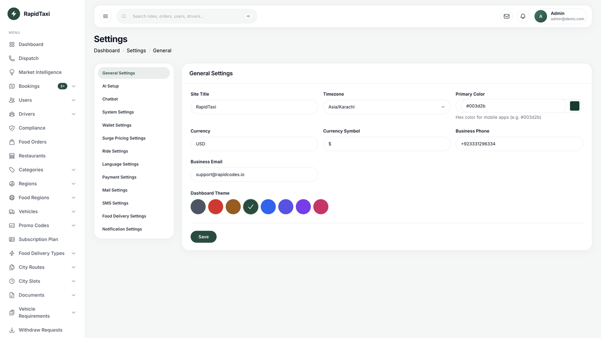
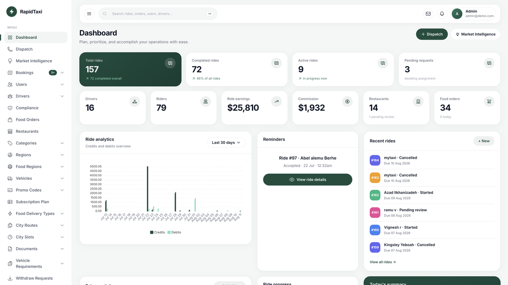
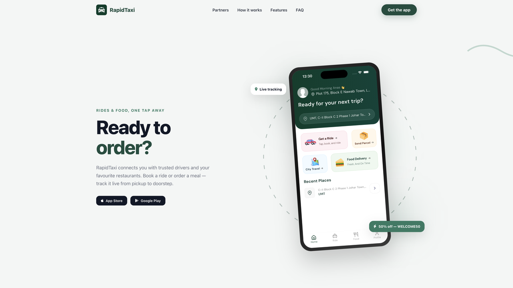
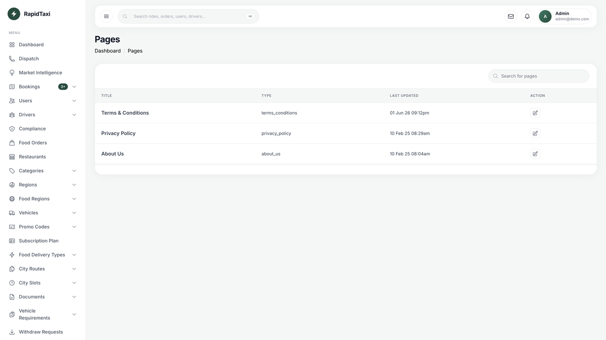

Rapidx Documentation
Welcome to the documentation for Rapidx — a white-label taxi and food delivery platform. This guide covers installation, the public marketing landing page, admin configuration, unique platform features, and mobile app setup.
Before You Begin: Have ready your Google Maps API keys, Firebase project files, payment gateway credentials, and (optional) AI provider keys if you use the Setup Wizard or Market Intelligence briefings.
How the Apps, Backend & Firebase Interact
Rapidx is three Flutter clients plus one Laravel API/admin. Firebase is used for auth helpers, push notifications, and realtime chat / location updates where configured.
System overview
Ride request flow
Food order flow
Platform Overview
The package includes everything needed to launch under your own brand:
| Component | Description |
|---|---|
| Rider mobile app | Flutter app for Android and iOS — book rides, order food, wallet, promo codes, subscription membership |
| Driver mobile app | Flutter app — accept rides, bidding, food delivery, earnings, levels and badges |
| Restaurant partner app | Flutter app — manage incoming food orders |
| Admin panel & API | Laravel 11 backend, web admin, and REST API |
| Marketing landing page | Public homepage at your domain root (/) — see Landing Page |
Unique Platform Features
These capabilities are built into Rapidx and configurable from the admin panel.
Dual pricing — standard fares and bidding
- Standard mode: System-calculated fare from distance, vehicle, region, and surge rules
- Bidding mode: Rider offers a fare; drivers counter-bid; rider accepts or declines
- Toggle bidding and rider-offered fares under Settings → Ride Settings
Coupon and promo codes (rides + food)
- Admin → Promo Codes — percentage or fixed discount
- Scope: rides only, food only, or both; region limits; usage caps; first-order rules
- Rider app applies codes on trip booking and food checkout
Multi-currency
- Per taxi region and per food zone currency and symbol
- Default currency in Settings → General Settings
- Apps resolve currency from location; wallet payments require matching wallet currency
AI Insights — Market Intelligence
- Admin → Market Intelligence
- City health, demand heatmap, launch readiness, partner health, expansion recommender
- AI-generated city summaries when configured
AI Setup Wizard
- Admin → Setup (after login)
- Generate city proposals, review, apply regions/vehicles/settings, optional demo data
Driver gamification — levels and badges
- Drivers earn XP from rides, food orders, tips, and ratings
- Admin → Levels and Badges to define rules
- Driver app shows level progress and badge collection
Subscription / membership plan
- Admin → Passes (subscription plan) — monthly/yearly prices, ride discount %, free food delivery, usage limits
- Rider app → Profile → Subscription — subscribe, view active plan, cancel at period end
- Payments: wallet, Stripe (recurring), PayPal, Razorpay, MyFatoorah (each must be enabled in Payment Settings)
- Cancel keeps benefits until
expires_at; Stripe usescancel_at_period_end - Benefit preview: API
POST /api/passes/previewfor ride and food checkout - Reminder emails: run scheduler —
php artisan subscriptions:send-reminders(daily via cron +schedule:run) - Stripe: configure webhook on
/api/stripe/webhookfor subscription and invoice events
Other built-in features
- OTP trip start — Settings → Ride Settings
- Share trip — public link for live trip tracking
- Mergeable food orders — Settings → Food Delivery Settings
- Live support — staff desk at
/staff/login - Parcel deliveries — rider app
- Multi-language — Settings → Language
System Requirements
Server Requirements
- PHP 8.2 or higher
- Required PHP extensions: bcmath, ctype, curl, fileinfo, json, mbstring, openssl, pdo, pdo_mysql, tokenizer, xml, zip, grpc (the web installer checks these)
- Recommended: gd, exif, protobuf
- Database: MySQL 8+ or MariaDB 10.6+
- Web Server: Apache 2.4+ or Nginx, document root =
public/ - SSL Certificate: HTTPS required for all production environments
- Composer 2.0+ for dependency management
- Node.js 18+ (only if you rebuild admin Vite assets)
Mobile App Requirements
- Flutter SDK 3.0 or higher (3.3+ recommended)
- Android:
- Android Studio Arctic Fox or later
- Java JDK 11+
- Minimum SDK version 21
- iOS:
- Xcode 13+
- CocoaPods 1.11+
- macOS 11+ for development
Installation
The recommended path is the web installer at /install. It uses the same admin design, checks PHP extensions and folder permissions, writes .env, runs migrations, and seeds the default admin account. After a successful install the wizard is locked and will not appear again.
Step 1 — Upload the backend
- Upload the
cc-taxi-backendfolder to your server. - Point the web server document root at the
publicdirectory inside that folder (not the project root).
Step 2 — Create a MySQL database
- In your host panel (cPanel / Plesk / etc.), create a MySQL database.
- Create a database user and grant it full privileges on that database.
- Note the database name, username, password, and host for the next step.
Step 3 — Composer
- From the backend root (the folder that contains
artisan), run:composer install
Skip this if your package already includes avendorfolder. - Make sure
storage,bootstrap/cache, and the project root are writable by the web server. Rapidx creates.envfrom.env.exampleon the first visit — do not add a real.envto the zip.chmod -R 775 storage bootstrap/cache
Step 4 — Web installer
- Open
https://your-domain.com/install(use your real HTTPS domain). - Confirm PHP 8.2+ and the required extensions (pdo_mysql, mbstring, openssl, curl, xml, zip, grpc, and others listed on that page).
- Confirm folder permissions.
- Enter app name, app URL (no trailing slash), and MySQL details. Click Save and install.
- Wait while Rapidx runs
migrateand the required seeders. Do not close the tab.
When installation finishes, Rapidx writes storage/installed. Visiting /install after that sends you to the admin login. Do not delete that file on a live site.
Default Admin Credentials (created by the installer seeders):
Email: admin@demo.com
Password: 12345678
Admin URL: /login
Security Note: Change these credentials immediately after first login.
CLI fallback
If you cannot use the web installer, set APP_URL and DB_* in .env yourself, then:
php artisan key:generate php artisan migrate --seed touch storage/installed
The last command hides /install the same way the web wizard does.
Step 5 — Configure brand, Maps, and Firebase in Admin
- Go to Settings → General Settings and set site title, primary color, and theme.
- Go to Settings → System Settings and add your Google Maps keys.
- In the same System Settings page, set Firebase Project ID and upload the service-account JSON when you are ready for push notifications.
- Optionally run Setup in admin to configure a city with the AI wizard.
Step 6 — Connect the mobile apps
- In each Flutter app (
cc_taxi,cc_taxi_driver,cc_restaruant), openlib/data/config.dart. - Set
baseUrlto the same HTTPS value asAPP_URL(no trailing slash). - Replace Firebase placeholders with your real
google-services.json/GoogleService-Info.plistfor each package ID. See Firebase Setup. - Configure Google Maps in the apps. See Google Maps.
Most common mistake: leaving baseUrl as https://your-domain.com. Until all three apps use your real HTTPS domain, they cannot talk to your backend.
Step 7 — Cron, queue worker, and permissions
- Add the Laravel scheduler cron (required for subscriptions, reminders, and other scheduled commands):
* * * * * cd /path-to-your-project && php artisan schedule:run >> /dev/null 2>&1
- Set up a queue worker so background jobs run (ride dispatch, bidding expiry, food order timeouts, AI Setup Wizard, etc.). See Queue Workers.
- Set file permissions:
chown -R www-data:www-data /path-to-your-project chmod -R 755 /path-to-your-project/storage chmod -R 755 /path-to-your-project/bootstrap/cache
Queue Workers (queue:work)
Rapidx uses Laravel’s queue system for time-sensitive background work. Without a running worker, rides may not notify drivers, bids may not expire, food orders may not auto-cancel, and AI Setup jobs will stay pending.
Default queue driver: QUEUE_CONNECTION=database in .env (see .env.example). Migrations create the jobs and failed_jobs tables. You do not need Redis for the default setup.
Before you start
- Confirm in
.env:QUEUE_CONNECTION=database
- Clear config cache after changing
.env:php artisan config:clear
- Replace
/path-to-your-projectbelow with the real absolute path to the Laravel backend (the folder that containsartisan).
Option A — Shared hosting (cPanel / cron only)
Most shared hosts do not allow a long-running Supervisor process. Use cron to start a worker that processes pending jobs and exits.
- Open cPanel → Cron Jobs (or your host’s cron UI).
- Add a cron that runs every minute:
* * * * * cd /path-to-your-project && php artisan queue:work --stop-when-empty --sleep=3 --tries=3 --max-time=55 >> /dev/null 2>&1
- Keep the Laravel scheduler cron as well (separate entry):
* * * * * cd /path-to-your-project && php artisan schedule:run >> /dev/null 2>&1
- If your host requires the full PHP path (common on shared hosting), use something like:
* * * * * cd /path-to-your-project && php artisan queue:work --stop-when-empty --sleep=3 --tries=3 --max-time=55 >> /dev/null 2>&1
Find the correct PHP binary in cPanel under “Select PHP Version” or ask support forwhich php.
Shared hosting tips:
--stop-when-emptystops the process when the queue is idle (required on many shared plans).--max-time=55avoids overlapping the next minute’s cron run.- Some hosts disable CLI
phpor limit runtime — if jobs never run, ask the host for SSH + cron PHP CLI access, or upgrade to a VPS. - Do not set
QUEUE_CONNECTION=syncin production; it will slow web requests and can time out.
Option B — VPS / dedicated server (Supervisor — recommended)
On a VPS you should run a continuous worker managed by Supervisor so jobs start immediately without waiting for the next cron minute.
- Install Supervisor (Debian/Ubuntu):
sudo apt update sudo apt install supervisor -y
- Create a program config:
sudo nano /etc/supervisor/conf.d/rapidx-worker.conf
- Paste (adjust paths and
userto match your server — oftenwww-data,nginx, or your deploy user):[program:rapidx-worker] process_name=%(program_name)s_%(process_num)02d command=php /path-to-your-project/artisan queue:work --sleep=3 --tries=3 --max-time=3600 autostart=true autorestart=true stopasgroup=true killasgroup=true user=www-data numprocs=1 redirect_stderr=true stdout_logfile=/path-to-your-project/storage/logs/worker.log stopwaitsecs=3600
- Reload and start:
sudo supervisorctl reread sudo supervisorctl update sudo supervisorctl start rapidx-worker:* sudo supervisorctl status
- After deploying code changes that affect jobs, restart workers:
php artisan queue:restart sudo supervisorctl restart rapidx-worker:*
Optional: increase numprocs=2 (or more) if you have high ride/order volume. Ensure the worker user can write to storage/logs.
Verify the queue is working
- Manually process one batch (SSH):
cd /path-to-your-project php artisan queue:work --once -v
- Check for failed jobs:
php artisan queue:failed
Retry all if needed:php artisan queue:retry all - Watch the log (VPS):
tail -f storage/logs/worker.log - In MySQL, pending jobs appear in the
jobstable; if that table keeps growing, the worker is not running.
What depends on the queue
- Ride request dispatch / expanding driver search radius
- Driver bid expiry
- Food order auto-cancel / related delayed jobs
- AI Setup Wizard proposal generation
- Demo / simulated driver movement (when enabled)
Marketing Landing Page
Rapidx includes a ready-made public marketing site served at your domain root (live example: https://cab.rapidcodes.io/).
It is separate from the admin panel (/login) and is intended for riders, drivers, and partners.
What is included
- Responsive homepage with hero, partner network, how-it-works steps, features marquee, service cards, coverage map, FAQ, and download CTA
- Branded with your site title from admin General Settings
- Shared styling with admin login via
public/css/landing.css - Optional chatbot embed when enabled in admin chatbot settings
Customization
- Site name: Admin → Settings → General Settings → Site Title (used in page title and headings)
- Logo: Replace
public/img/logo.pngwith your brand logo - App screenshots: Add
public/img/landing_section_1.pngfor the phone mockup in the hero (recommended portrait ratio) - Styles: Edit
public/css/landing.cssfor colors and layout; primary brand color can also follow admin theme settings where shared - Content: Edit
resources/views/welcome.blade.phpfor section text, FAQ, city pins, and store links - Store links: Update App Store / Google Play URLs in the download section of
welcome.blade.phpwhen your apps are published
Files reference
| File | Purpose |
|---|---|
resources/views/welcome.blade.php |
Landing page HTML structure and copy |
public/css/landing.css |
Landing page styles |
public/js/landing.js |
Animations, FAQ accordion, mobile menu (if present) |
routes/web.php |
Route GET / serves the landing view |
Tip: After changing Blade views, run php artisan view:clear on the server if changes do not appear immediately.
Bidding and Standard Pricing
Configure under Settings → Ride Settings in the admin panel.
- Standard pricing: Fare is calculated server-side before booking; driver accepts at that fare
- Bidding mode: Enable bidding and optionally allow riders to set their own offer
- Vehicle types support seating capacity and description shown in the rider app
- Surge pricing available under surge settings when enabled
Rider flow (bidding)
- Rider selects vehicle and enters offer fare
- Drivers receive request and submit bids
- Rider accepts one bid; trip proceeds as normal
Promo Codes and Vouchers
Admin → Promo Codes
- Create a code with discount type (percentage or fixed amount)
- Choose service: taxi, food, or both
- Set regions (taxi regions and/or food regions) if the code is location-specific
- Set max uses, per-user limits, minimum order value, expiry, and first-order-only if needed
- Save — riders can apply the code in the app immediately when status is active
Multi-Currency Setup
- Set default currency and symbol in Settings → General Settings
- For each taxi region: Regions → create/edit → set currency and symbol
- For each food zone: Food Regions → set currency for that delivery area
- Ensure payment gateways support the currencies you enable
- User wallet currency is set on first wallet top-up; wallet can only pay orders in the same currency
AI Insights (Market Intelligence)
Admin → Market Intelligence
- City Health: KPIs and AI/template summaries per city
- Demand: Heatmap view of order concentration
- Launch Readiness: Checklist score before going live in a city
- Partners: Restaurant health metrics
- Expansion: Suggested cities to open next
Configure AI provider keys under Settings → AI Setup if you want AI-generated briefings (otherwise template summaries are used where available).
AI Setup Wizard
Admin → Setup (menu available after admin login)
- Start a new setup session and select country/city
- Configure AI settings if using AI-generated proposals
- Generate proposal — review regions, vehicles, and suggested settings
- Edit the proposal if needed, then Apply
- Optionally load demo data or run simulation for demos
- Skip wizard at any time and configure manually via Regions, Vehicles, etc.
To remove demo data later: php artisan setup:purge-demo (when demo mode was used).
Driver Levels and Badges
Level definitions
Admin → Levels — define level number, name, icon, and minimum XP required.
Badge definitions
Admin → Badges — create badges with criteria (rides completed, earnings, ratings, consistency, etc.).
How it works
- XP is awarded automatically when drivers complete rides, receive tips, get ratings, and complete food deliveries
- When XP crosses a threshold, the driver levels up
- Badges unlock when criteria are met
- Drivers view progress in the driver app badges screen
Visual Branding Customization
Use this guide to rebrand Rapidx for your company. Start in the Admin panel (no code), then update mobile assets.
1. Admin panel brand (logo, name, colors)
Log in to Admin → Settings → General Settings. This is where white-label branding starts:
- Site Title — your brand name shown in the admin and used as the platform name
- Primary Color — hex color applied to mobile apps (e.g.
#003d2b) - Dashboard Theme — color swatches that restyle the admin UI immediately
- Currency, business phone, and business email for customer-facing details


2. Marketing landing page
Your public homepage at the domain root uses the brand color and logo assets:
- Logo: replace
cc-taxi-backend/public/img/logo.png - Hero / phone mockup:
cc-taxi-backend/public/img/landing_section_1.png(portrait works best) - Styles:
cc-taxi-backend/public/css/landing.css - Copy: edit
resources/views/welcome.blade.php

3. Legal / About CMS pages
Admin → Pages to edit Terms & Conditions, Privacy Policy, and About Us shown in the mobile apps.

4. Mobile app name
In each Flutter project, open lib/data/config.dart (customer app) and set:
static const appName = 'Your Brand';
Also update the Android android:label in AndroidManifest.xml and the iOS display name in Xcode / Info.plist.
5. Mobile primary color
Customer theme defaults to deep green #003D2B in lib/theme/light_theme.dart:
ThemeData lightTheme([Color primaryColor = const Color(0xFF003D2B)])
Match this hex to the Primary Color you set in General Settings. Apply the same primary in the driver and restaurant theme files so all three apps feel consistent.
6. App icons & splash
- Replace launcher icons under each app’s
android/app/src/main/res/mipmap-*and iOSAssets.xcassets/AppIcon.appiconset. - Or use a Flutter icon package /
flutter_launcher_iconswith your master PNG. - Update splash / launch images in
ios/Runner/Assets.xcassets/LaunchImage.imagesetand Android drawable splash resources.
7. In-app images
Customer app image assets live under cc_taxi/assets/images/ (and similar folders in the other apps). Swap illustrations and placeholder graphics while keeping the same filenames when possible so you do not need code changes.
Base URL Configuration (Connect Apps to Backend)
Every Flutter app talks to your Laravel backend using a single constant: baseUrl. This must be your public HTTPS domain (the same value as APP_URL in backend .env), with no trailing slash.
The package ships with https://your-domain.com as a placeholder so the projects compile. Replace it with your real domain before testing or publishing.
Customer app (cc_taxi)
- Open
cc_taxi/lib/data/config.dart - Set:
static const baseUrl = 'https://your-domain.com';
- Example for a subdomain API host:
static const baseUrl = 'https://api.your-domain.com';
Driver app (cc_taxi_driver)
- Open
cc_taxi_driver/lib/data/config.dart - Set the same URL:
static const baseUrl = 'https://your-domain.com';
Restaurant app (cc_restaruant)
- Open
cc_restaruant/lib/data/config.dart - Set the same URL:
static const baseUrl = 'https://your-domain.com';
Backend match check
In cc-taxi-backend/.env:
APP_URL=https://your-domain.com
storageUrl is derived automatically as $baseUrl/storage. After changing baseUrl, fully restart the app (not just hot reload).
Local development tip: For a device on your LAN you may temporarily use http://YOUR_COMPUTER_LAN_IP:8000. Do not ship localhost (127.0.0.1) in production builds — Android emulators and physical devices cannot reach your computer that way reliably, and store builds must use HTTPS.
Flutter App Configuration
Initial Setup
- Install Flutter SDK and open each project folder (
cc_taxi,cc_taxi_driver,cc_restaruant) - Run
flutter pub getin each project - Set
baseUrl— see Base URL Configuration (required) - Create a Firebase project and replace the placeholder config files — see Firebase Setup
Package Name & Bundle ID
Android Configuration
- Open
android/app/build.gradle - Update the applicationId:
android { defaultConfig { applicationId "com.yourcompany.taxiapp" minSdkVersion 21 targetSdkVersion 33 // ... } } - Update package name in these files:
android/app/src/main/AndroidManifest.xmlandroid/app/src/debug/AndroidManifest.xmlandroid/app/src/profile/AndroidManifest.xml
- Rename the package directory structure to match your new package name:
android/app/src/main/kotlin/com/yourcompany/taxiapp
iOS Configuration
- Open
ios/Runner.xcworkspacein Xcode - Select the Runner project in the project navigator
- Go to the "General" tab and update the Bundle Identifier
- Update the bundle ID in
ios/Runner/Info.plist - Update the PRODUCT_BUNDLE_IDENTIFIER in
ios/Runner.xcodeproj/project.pbxproj
Google Maps Configuration
Android Setup
- Get a Google Maps API key from the Google Cloud Console
- Enable these APIs:
- Maps SDK for Android
- Maps SDK for IOS
- Places API
- Directions API
- Geocoding API
- Add the API key to
android/app/src/main/AndroidManifest.xml:<manifest> <application> <meta-data android:name="com.google.android.geo.API_KEY" android:value="YOUR_ANDROID_API_KEY"/> </application> </manifest>
iOS Setup
- Get a separate iOS API key from Google Cloud Console
- Enable "Maps SDK for iOS" in the API console
- Update
ios/Runner/AppDelegate.swift:import GoogleMaps @main class AppDelegate: FlutterAppDelegate { override func application( _ application: UIApplication, didFinishLaunchingWithOptions launchOptions: [UIApplication.LaunchOptionsKey: Any]? ) -> Bool { GMSServices.provideAPIKey("YOUR_IOS_API_KEY") GeneratedPluginRegistrant.register(with: self) return super.application(application, didFinishLaunchingWithOptions: launchOptions) } } - Add the API key to
ios/Runner/Info.plist:<key>GMSApiKey</key> <string>YOUR_IOS_API_KEY</string>
Firebase Configuration
The package includes placeholder Firebase files only. Each app has its own file with the correct package / bundle ID. You must replace them with files from your Firebase console before Auth, FCM, or Google Sign-In will work.
Default package / bundle IDs (as shipped)
| App | Android applicationId | iOS Bundle ID |
|---|---|---|
| Customer | com.rapidtaxi.userapp | com.rapidtaxi.userapp |
| Driver | com.rapidtaxi.driver | com.rapidtaxi.driver |
| Restaurant | com.rapidtaxi.restaurant | com.rapidtaxi.restaurant |
If you change these IDs, register the new ones in Firebase and download fresh config files.
Firebase Project Setup
- Create a new Firebase project at Firebase Console
- Add three Android apps and three iOS apps (one pair per mobile project), using the package / bundle IDs above (or your customized ones)
- Download the configuration files for each app:
google-services.jsonfor AndroidGoogleService-Info.plistfor iOS
- Replace the placeholders in these exact locations:
- Customer Android:
cc_taxi/android/app/google-services.json - Customer iOS:
cc_taxi/ios/Runner/GoogleService-Info.plist - Driver Android:
cc_taxi_driver/android/app/google-services.json - Driver iOS:
cc_taxi_driver/ios/Runner/GoogleService-Info.plist - Restaurant Android:
cc_restaruant/android/app/google-services.json - Restaurant iOS:
cc_restaruant/ios/Runner/GoogleService-Info.plist
- Customer Android:
- Confirm each
google-services.jsonpackage_namematches that app’sapplicationId— do not copy one file into all three apps.
Firestore Security Rules
For development, use these permissive rules (replace with production rules before launch):
rules_version = '2';
service cloud.firestore {
match /databases/{database}/documents {
match /{document=**} {
allow read, write: if true;
}
}
}
Required Firestore Indexes
| Collection | Fields | Order |
|---|---|---|
| rides | driver_id, status, __name__ | Ascending, Ascending, Ascending |
| rides | driver_id, createdAt, status, __name__ | Ascending, Descending, Descending, Descending |
| rides | user_id, status, __name__ | Ascending, Ascending, Ascending |
| rides | status, createdAt, __name__ | Ascending, Ascending, Ascending |
| users | name, created_at, __name__ | Ascending, Ascending, Ascending |
Firebase Authentication
Enable these authentication methods in Firebase Console:
- Phone Authentication
Troubleshooting
Common Issues & Solutions
Installer already finished / /install goes to login
- That is expected after a successful install. Rapidx creates
storage/installedso the wizard cannot run twice. - On a development copy only, delete
storage/installedto see the wizard again. Never do this on a live database unless you intend to reinstall.
Installer cannot save .env or permissions fail
- The web server user must be able to write
.env,storage/, andbootstrap/cache/. - Typical fix:
chmod -R 775 storage bootstrap/cacheandchownthose paths to the web user (oftenwww-dataornobody).
Database connection error on the installer form
- Confirm host, port, database name, username, and password in cPanel/Plesk.
- On shared hosting the database must already exist; the installer can only create it if the MySQL user has
CREATEprivilege. - Database names may only contain letters, numbers, and underscores.
Apps Cannot Reach the Backend
- Confirm
baseUrlin all threelib/data/config.dartfiles matches backendAPP_URL(HTTPS, no trailing slash) - Fully restart the app after changing
baseUrl(hot reload is not enough) - Ensure there is exactly one active
static const baseUrl = '...';line (not commented out)
Google Maps Not Displaying
- Verify API keys: Ensure separate keys for Android and iOS
- Check API restrictions: Keys should be restricted to your app package/bundle ID
- Enable billing: Google Maps requires a billing account
- Check API logs: Review errors in Google Cloud Console
Push Notifications Not Working
- Verify Firebase config: Ensure correct package name/bundle ID
- Check Android:
- SHA-1 fingerprint added to Firebase project
- google-services.json properly placed
- Check iOS:
- APNs authentication key configured
- Push Notifications capability enabled
- Correct provisioning profile
Payment Gateway Issues
- Test in sandbox mode first
- Check currency compatibility with your payment processor
- Review error logs in /storage/laravel.log
Rides / Orders Stuck — Queue Not Processing
- Confirm
QUEUE_CONNECTION=databasein.env, then runphp artisan config:clear - Shared hosting: ensure the every-minute
queue:work --stop-when-emptycron exists (see Queue Workers) - VPS: run
sudo supervisorctl statusand restartrapidx-worker:*if needed - Check pending jobs: rows accumulating in the
jobstable mean no worker is consuming them - Check failures:
php artisan queue:failedandstorage/logs/laravel.log